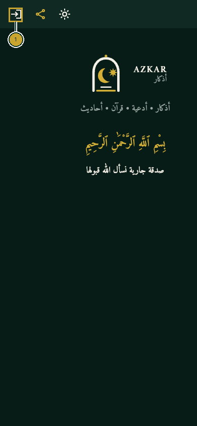
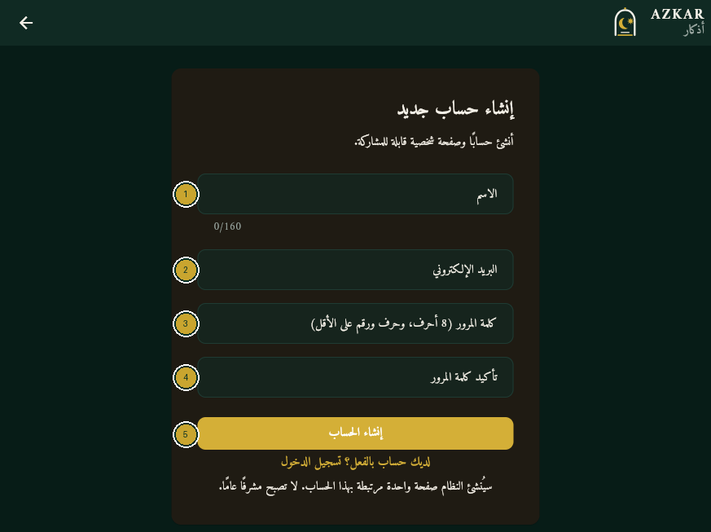
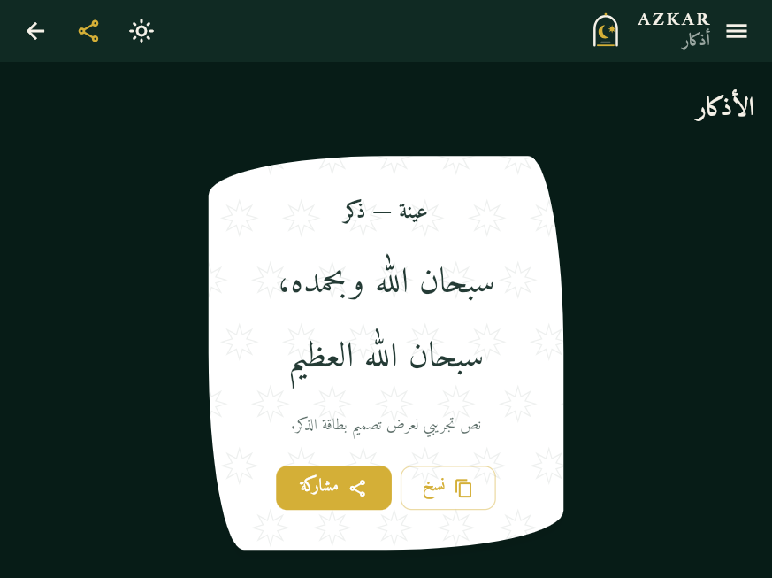
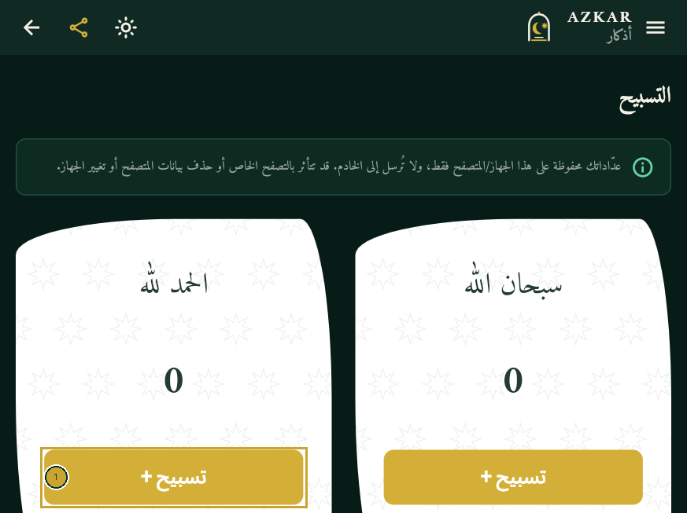

أذكار مساحة إلكترونية تساعدك على إعداد صفحات تذكارية مستقلة، وإضافة الأذكار والآيات والأحاديث والأدعية والتسبيح والإهداءات إليها، ثم مشاركة رابط الصفحة مع من تحب.
يمكن لكل صفحة أن تحمل اسمًا ورسالة ومحتوى ومظهرًا خاصًا بها. ويستطيع الزائر فتح الصفحة المنشورة وقراءة ما أُتيح فيها دون إنشاء حساب.
ببساطة: صاحب الحساب ينشئ الصفحة ويدير محتواها، والزائر يفتح الرابط ويقرأ المحتوى المنشور ويستخدم عدّادات التسبيح.
٢. الدخول إلى التطبيق والتنقل
افتح رابط تطبيق أذكار في متصفح الإنترنت على هاتفك أو حاسوبك.
تعرض الصفحة العامة شعار أذكار والبسملة. اضغط رمز الدخول في الشريط العلوي للوصول إلى تسجيل الدخول.
من شاشة الدخول، اختر «ليس لديك حساب؟ إنشاء حساب جديد» إذا كنت تسجل للمرة الأولى.
بعد تسجيل الدخول، افتح «صفحاتي وروابطي» للوصول إلى صفحاتك وإدارتها.
في شاشة الهاتف قد تظهر بعض الأدوات على شكل رموز. اضغط رمز القائمة لعرض خيارات التنقل المتاحة في الشاشة الحالية.

١ رمز الدخول أعلى الشاشة يفتح شاشة تسجيل الدخول.
ملاحظة: الصفحة العامة الرئيسية تعرض هوية أذكار والبسملة. أما محتوى الذكرى فيظهر داخل صفحة التذكار نفسها بعد نشرها.
٣. إنشاء حساب جديد
من شاشة «تسجيل الدخول»، اضغط «ليس لديك حساب؟ إنشاء حساب جديد».
اكتب اسمك في حقل «الاسم».
أدخل بريدك الإلكتروني في حقل «البريد الإلكتروني».
أنشئ كلمة مرور من 8 أحرف على الأقل، تحتوي على حرف ورقم، ثم اكتبها في «كلمة المرور».
أعد كتابة كلمة المرور نفسها في «تأكيد كلمة المرور».
اضغط «إنشاء الحساب» وانتظر رسالة التأكيد على الشاشة.
قد يطلب منك التطبيق تأكيد بريدك الإلكتروني. إذا ظهرت رسالة بذلك، افتح بريدك واتبع رابط التأكيد، ثم ارجع إلى التطبيق وسجّل الدخول.
يرتبط الحساب بصفحة شخصية أولى. بعد الدخول يمكنك إنشاء صفحات إضافية من «صفحاتي وروابطي».

١ الاسم، ٢ البريد الإلكتروني، ٣ كلمة المرور، ٤ تأكيد كلمة المرور، ٥ إنشاء الحساب. النموذج فارغ ولم يُرسل.
٤. تسجيل الدخول والخروج
تسجيل الدخول
من الصفحة العامة، اضغط رمز الدخول، أو افتح شاشة «تسجيل الدخول».
أدخل بريدك الإلكتروني وكلمة المرور.
اضغط «تسجيل الدخول».
بعد نجاح الدخول، افتح «صفحاتي وروابطي» لاختيار الصفحة التي تريد إدارتها.
إذا نسيت كلمة المرور، اضغط «نسيت كلمة المرور؟» واتبع التعليمات التي تظهر على الشاشة.
تسجيل الخروج
افتح قائمة لوحة الصفحة.
اضغط «تسجيل الخروج».
٥. إنشاء صفحة صدقة جارية
سجّل الدخول وافتح «صفحاتي وروابطي».
اضغط «إنشاء صفحة جديدة».
اكتب الاسم في الحقل الذي يظهر باسم «اسم المتوفى» أو «اسم المتوفاة».
اختر «المرحوم» أو «المرحومة». يساعد الاختيار التطبيق على استخدام الصياغة المناسبة في الصفحة ورسالة المشاركة.
اكتب «رسالة الإهداء (اختيارية)» إذا رغبت.
راجع «الرابط المختصر». استخدم الحروف الإنجليزية والأرقام والشرطة فقط، واجعله بين 3 و40 حرفًا. يجب أن يكون الرابط غير مستخدم من قبل.
اضغط «إنشاء مسودة».
تُنشأ الصفحة كمسودة خاصة بك. يمكنك معاينتها وتعديلها، لكن الزوار لن يستطيعوا فتح رابطها قبل نشرها.
تذكير: إذا كان حسابك يتضمن صفحة أولى جاهزة، افتحها من قائمة الصفحات. استخدم «إنشاء صفحة جديدة» لإضافة صفحة أخرى.
٦. إدارة الصفحات والروابط
افتح «صفحاتي وروابطي» لعرض صفحاتك. يمكنك إنشاء أكثر من صفحة من المكان نفسه.
اضغط «تعديل الصفحة» لفتح مساحة إدارة الصفحة المحددة.
استخدم «معاينة» لمراجعة الصفحة كما ستظهر للزوار. معاينة المسودة خاصة بك.
اضغط «نشر» لإتاحة الصفحة، أو «إلغاء النشر» لإخفائها عن الزوار مع الاحتفاظ بها في حسابك.
استخدم «نسخ الرابط» لنسخ الرابط العام، أو «مشاركة» لإرساله عبر تطبيقات المشاركة.
نسخ صفحة
زر «نسخ الصفحة» ينشئ صفحة مستقلة جديدة، وينسخ إليها محتوى الصفحة الأصلية وترتيبها ومظهرها. تبدأ النسخة كمسودة، ويمكنك تغيير الاسم والرابط قبل نشرها.
حالة الصفحة
«منشورة»: يمكن للزوار فتح الصفحة العامة.
«مسودة — الرابط غير متاح للعامة»: الصفحة خاصة بك، ويمكنك معاينتها وتعديلها.
إذا غيّرت الرابط المختصر، فقد تتوقف الروابط القديمة التي سبق أن شاركتها. راجع الرابط الجديد قبل إرساله.
٧. إضافة المحتوى الإسلامي
افتح لوحة الصفحة، واختر نوع المحتوى من القائمة. اضغط «إضافة»، املأ الحقول المناسبة، ثم اختر «حفظ كمسودة» أو «نشر». تظهر أيضًا خانة «العنوان (اختياري)» لمعظم الأنواع، باستثناء التسبيح والفيديوهات.
يظهر زر «تعديل» لتغيير العنصر. ويمكنك استخدام «تكرار» لإنشاء نسخة منه، أو «حذف» لإزالته نهائيًا. لا تضغط «حذف» إلا إذا كنت متأكدًا.
١. الأذكار
اختر «الأذكار»، ثم «إضافة». أدخل «النص العربي». يمكنك إضافة «العنوان (اختياري)» و«وصف مختصر (اختياري)» و«المصدر (اختياري)». احفظه كمسودة أو اضغط «نشر».

لقطة فعلية لقسم الأذكار في وضع العرض المحلي؛ النصوص الظاهرة عينات توضيحية.
٢. الآيات القرآنية
اختر «الآيات القرآنية»، ثم «إضافة». حدد «السورة» ورقم «من الآية» و«إلى الآية». راجع «اسم السورة» و«نص الآية/الآيات»، واستخدم «إدراج النص المعتمد» لإضافة النص من المصحف داخل التطبيق، ثم اضغط «التحقق من النص» قبل النشر. يمكن إضافة «ترجمة موثوقة (اختياري)».
٣. الأحاديث النبوية
اختر «الأحاديث»، ثم «إضافة». أدخل «نص الحديث» و«الراوي» و«الكتاب / المجموعة» و«رقم الحديث أو المرجع» و«درجة الحديث». أضف «شرح مختصر (اختياري)» عند الحاجة، وراجع المصدر قبل النشر.
٤. الأدعية
اختر «الأدعية»، ثم «إضافة». أدخل «النص العربي». يمكنك كتابة عنوان ووصف ومصدر اختياريين، ثم احفظ الدعاء أو انشره.
٥. التسبيح
اختر «التسبيح»، ثم «إضافة». اكتب العبارة في حقل «نص التسبيح». احفظها كمسودة أو انشرها لتظهر بطاقة يستطيع الزائر استخدامها.
٦. الفيديوهات
اختر «الفيديوهات»، ثم «إضافة». أدخل «رابط يوتيوب أو Shorts». يمكنك إضافة «عنوان الفيديو (اختياري)» و«وصف (اختياري)»، ثم احفظه أو انشره.
٧. الإهداءات
اختر «الإهداءات»، ثم «إضافة». أدخل «اسم الشخص / الأشخاص»، واختر «صيغة الإهداء»، واكتب «رسالة الإهداء» و«الدعاء»، ثم احفظ الإهداء أو انشره.
تظهر في شاشة المحتوى معاينة مباشرة للبطاقة. الآيات والأحاديث تحتاج عناية خاصة؛ تحقق من النص والمرجع قبل إتاحتهما للزوار.
٨. إدارة محتوى صفحة التذكار
تحتوي كل صفحة تذكار على ترتيب ومحتوى خاصين بها. افتح «ترتيب الرئيسية» لإضافة بطاقات الصفحة أو إخفائها أو تغيير ترتيبها.
اضغط «إضافة بطاقة» لإضافة محتوى منشور غير موجود في ترتيب الصفحة.
استخدم زري «أعلى» و«أسفل» لتغيير ترتيب البطاقات.
استخدم رمز العين أو خياري «إخفاء» و«إظهار» للتحكم في ظهور البطاقة داخل الصفحة.
اضغط «حفظ الترتيب» لحفظ التغييرات.
اضغط «معاينة الموقع» لمراجعة النتيجة.
النشر والظهور خياران مختلفان
نشر المحتوى: يجعل العنصر متاحًا للعرض. «إلغاء النشر» يعيده إلى مسودة ويخفيه عن الزوار.
إظهاره في الصفحة: يحدد هل تُدرج البطاقة في ترتيب صفحة التذكار. يمكنك إخفاؤها أو إزالتها من الترتيب دون حذف العنصر نفسه.
كي يظهر المحتوى للزائر، يجب أن يكون منشورًا ومضافًا ومفعّلًا في ترتيب صفحة التذكار، وأن تكون صفحة التذكار منشورة. قد تُضاف العناصر الجديدة إلى ترتيب الصفحة تلقائيًا؛ أما المحتوى المنشور سابقًا فقد تحتاج إلى إضافته من «إضافة بطاقة».
تمييز مهم: الصفحة العامة الأولى لتطبيق أذكار تعرض الهوية والبسملة، وليست مكان عرض محتوى صفحة التذكار. رتّب المحتوى من داخل صفحة التذكار التي تديرها.
٩. تخصيص شكل الصفحة
مظهر الصفحة
من قائمة لوحة الصفحة، افتح «المظهر والخطوط».
غيّر اللون الأساسي واللون الثانوي والخلفية والسطح وألوان البطاقات والنص.
اختر «الخط الافتراضي» و«شكل البطاقة الافتراضي».
راجع «معاينة حية»، ثم اضغط «حفظ المظهر».
تُطبّق هذه الإعدادات على صفحة التذكار الخاصة بك فقط.
مظهر بطاقة منفردة
أثناء إضافة محتوى أو تعديله، يتيح قسم «مظهر البطاقة» اختيار «الخط العربي» و«حجم الخط» و«وزن الخط» و«ارتفاع السطر» و«شكل البطاقة» و«محاذاة النص» ولوني النص والخلفية. ويمكنك تشغيل أو إيقاف «تدرّج لوني خفيف» و«زخرفة هندسية إسلامية» و«إطار حول البطاقة».
استخدم المعاينة قبل الحفظ للتأكد من وضوح النص على الهاتف والحاسوب.
١٠. مشاركة صفحة التذكار
تأكد أولًا أن حالة الصفحة «منشورة».
من «صفحاتي وروابطي»، اضغط «نسخ الرابط» أو «مشاركة» بجانب الصفحة.
اختر «نسخ الرابط» أو إحدى وسائل المشاركة المتاحة، مثل «واتساب» أو «تيليجرام» أو «فيسبوك» أو «مشاركة عبر التطبيقات».
أرسل الرابط إلى من تريد. افتح الرابط بنفسك مرة واحدة للتأكد من أنه يعمل.
تعرض الصفحة العامة اسم الشخص ورسالة الإهداء والأقسام المنشورة والمضافة إلى الصفحة. لا يحتاج الزائر إلى إنشاء حساب لفتح صفحة منشورة.
إذا كانت الصفحة مسودة، سيخبرك التطبيق أن الرابط العام غير متاح. انشر الصفحة أولًا إذا أردت مشاركتها.
١١. استخدام صفحة التسبيح
افتح قسم «التسبيح» من أقسام صفحة التذكار إذا كان ظاهرًا فيها.
اقرأ العبارة على البطاقة، ثم اضغط «تسبيح +» لزيادة عدّادها مرة واحدة.
لكل عبارة عدّاد مستقل؛ الضغط على بطاقة لا يغيّر عدّاد بطاقة أخرى.
للبدء من جديد، اضغط «تصفير»، ثم أكّد الاختيار في نافذة «تصفير العدّاد» بالضغط على «تصفير».

١ اضغط «تسبيح +» لزيادة عدّاد البطاقة. العبارات الظاهرة عينات في وضع العرض المحلي.
يُحفظ عدّادك على هذا المتصفح أو الجهاز فقط. لا ينتقل العدّاد إلى خادم التطبيق أو إلى أجهزة الزوار الآخرين. قد يتأثر باستخدام التصفح الخاص أو حذف بيانات المتصفح أو تغيير الجهاز.
١٢. الأسئلة الشائعة
هل يمكن إنشاء أكثر من صفحة؟
نعم. افتح «صفحاتي وروابطي» واضغط «إنشاء صفحة جديدة». لكل صفحة محتواها وترتيبها ومظهرها ورابطها.
هل يحتاج الزائر إلى حساب؟
لا. يمكن للزائر فتح الصفحة المنشورة من رابطها دون تسجيل. يحتاج الحساب إلى صاحبه لإدارة الصفحة.
ماذا أفعل إذا كان التسجيل غير متاح؟
إذا ظهرت رسالة بأن التسجيل غير متاح أو أن الصفحة في وضع العرض المحلي، فالتسجيل غير مفعّل في هذه النسخة. اتبع التعليمات المعروضة أو تواصل مع مسؤول التطبيق.
كيف أشارك رابط الصفحة؟
من «صفحاتي وروابطي»، اضغط «نسخ الرابط» أو «مشاركة». لا يمكن مشاركة صفحة مسودة كرابط عام.
كيف أعدّل اسم المتوفى أو المتوفاة؟
اختر الصفحة، ثم افتح «إعدادات الصفحة». عدّل الاسم والاختيار المناسب «المرحوم» أو «المرحومة»، ثم احفظ الإعدادات.
كيف أضيف تسبيحًا جديدًا؟
من لوحة الصفحة، اختر «التسبيح»، اضغط «إضافة»، اكتب «نص التسبيح»، ثم احفظه أو انشره.
لماذا لا يظهر المحتوى الذي أضفته؟
تحقق من أن المحتوى منشور، وأن بطاقته مفعّلة في «ترتيب الرئيسية»، وأن الصفحة نفسها منشورة. قد تحتاج إلى إضافة عنصر منشور سابقًا من زر «إضافة بطاقة».
هل يمكن إخفاء محتوى دون حذفه؟
نعم. استخدم «إخفاء» في ترتيب الصفحة لإزالته من العرض مع إبقاء المحتوى، أو «إلغاء النشر» لإخفائه عن الزوار وإعادته إلى مسودة. «إزالة من الرئيسية» تزيل البطاقة من الترتيب ولا تحذف المحتوى.
هل عدّاد التسبيح مشترك بين جميع الزوار؟
لا. لكل زائر عدّاد محفوظ على متصفحه أو جهازه، ولا تتم مزامنته مع الآخرين.
كيف أعود لتعديل صفحتي؟
سجّل الدخول، وافتح «صفحاتي وروابطي»، ثم اضغط «تعديل الصفحة» بجانب الصفحة المطلوبة.
هل يمكن حذف المحتوى نهائيًا؟
نعم، من قائمة المحتوى اضغط «حذف» ثم أكّد الحذف. الحذف نهائي؛ استخدم الإخفاء أو «إلغاء النشر» إذا أردت الاحتفاظ به.
١٣. نصائح للاستخدام
راجع اسم الشخص ورسالة الإهداء والرابط المختصر قبل نشر الصفحة.
تحقق من كتابة الآيات والأحاديث ومراجعها من مصدر موثوق.
استخدم معاينة البطاقة والصفحة بعد كل تغيير.
جرّب الرابط العام قبل إرساله إلى الآخرين.
تأكد من أن التباين وحجم الخط مناسبان للقراءة على الهاتف.
اختر «إخفاء» أو «إلغاء النشر» قبل اللجوء إلى الحذف إذا كنت غير متأكد.
١٤. الخاتمة
نرجو أن يساعدك هذا الدليل على إنشاء صفحة تذكارك وإدارتها ومشاركتها بكل يسر. نسأل الله أن يتقبل العمل وينفع به.